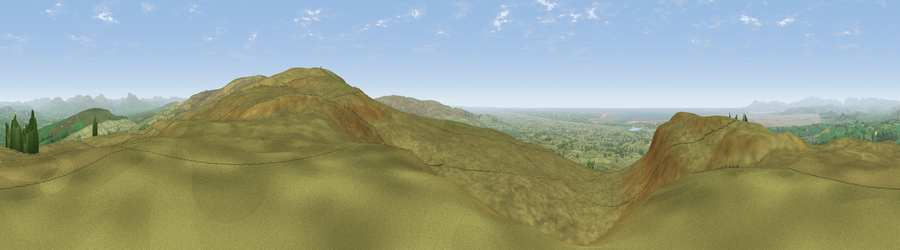

Viewpoint near Quernmore
#2452 in England · top 5% of its area beats it · near QuernmoreWhere it is
The exact computed spot (SD 54875 59400). Click the marker for map links.
The view, rendered

A 360° render of this exact spot computed from the terrain model, tree cover and land cover — summer colours, afternoon light, calibrated against photographs of famous viewpoints. Real trees, hedges and buildings will differ in detail.
The panorama
Grey silhouette: terrain skyline in each direction (720 bearings, Earth curvature and refraction included). Dashed green: skyline with trees (+15 m) and buildings (+8 m) as obstacles. Blue strip: how far the ground is visible on each bearing.
Where the view opens
Wedge length = distance to the farthest visible ground on that bearing (vegetation-aware). Rings at 10, 25 and 50 km.
What fills the view
92% grassland · 4% water · 3% woodland ·
Angular shares of the visible panorama (visual magnitude), not map area. Landscape diversity 0.17 (0–1 Shannon).
Key numbers
More beautiful places nearby
The staircase of upgrades: each row has a higher view potential than everything closer. Driving times are estimates from straight-line distance, calibrated against real road routing — check an actual route before setting out.
| Place | Direction | Drive | Score |
|---|---|---|---|
| Viewpoint near Quernmore | W · 0 km | ~2 min | 78.0 |
| Viewpoint near Scorton | SSW · 11 km | ~21 min | 79.9 |
| Warton Crag | NNW · 15 km | ~26 min | 83.2 |
| Viewpoint near Grange-over-Sands | NW · 24 km | ~40 min | 83.4 |
| Viewpoint near Cartmel | NW · 28 km | ~44 min | 87.0 |
| Viewpoint near Cartmel | NW · 28 km | ~44 min | 87.2 |
| Viewpoint near Finsthwaite | NNW · 33 km | ~51 min | 90.3 |
| The Knoll | S · 371 km | ~360 min | 91.0 |
54.02861, -2.69036 · source: screening · position refined by local search. Computed location — check access rights before visiting.